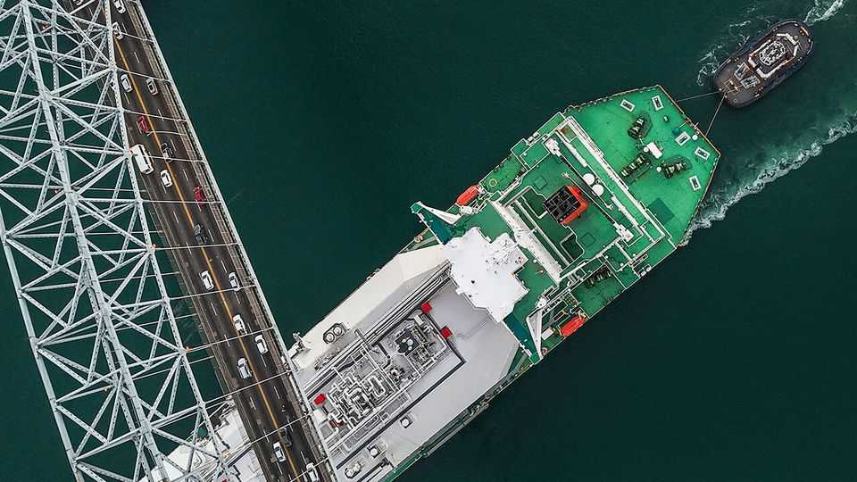
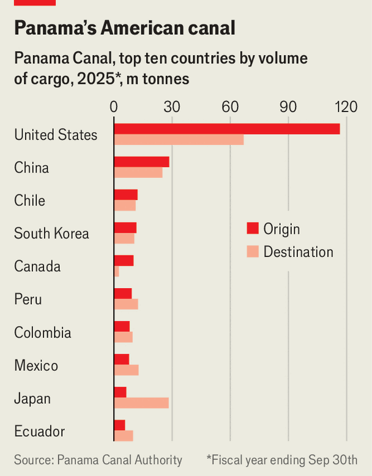
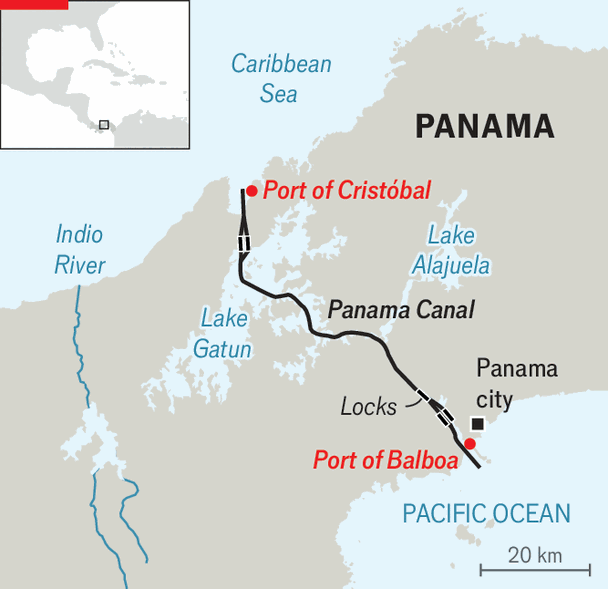

The Panama Canal is growing more important
And the challenges to it are getting more acute
July 16th 2026

When Donald Trump’s war with Iran first closed the Strait of Hormuz this year, the effects were felt swiftly on the other side of the world. Demand for passage through the Panama Canal, the 80km waterway linking the Atlantic and Pacific Oceans, shot up to near its maximum capacity of 36 to 40 transits a day. The number of ships carrying fuel through the canal rose sharply as countries turned to American energy. The number of liquefied-natural-gas (LNG) cargoes transiting almost doubled in April, compared with the same month last year.
The Panama Canal carries just 5-6% of world maritime trade. That is less than some other chokepoints, such as the Strait of Malacca near Singapore. Yet its importance is growing, both because of the Middle East war and because of enduring changes to flows of goods and energy. This could be a boon to the country of 4.6m people that hosts it, but only if it can avoid becoming a pawn in the rivalry between China and the United States.
The goods that pass along the canal run the gamut, from toys to cars, fertilisers to fruit. But its significance as a route for energy shipments is especially striking, largely due to the United States’ rise as an exporter of LNG and liquefied petroleum gas (LPG). The canal built the infrastructure needed to accept this traffic in 2016. It currently moves around 1m barrels of LPG a day, much of it travelling from the Gulf Coast to petrochemical plants in Asia.
The Economist met Ricaurte Vásquez Morales, the canal’s administrator, in a control room overlooking the waterway. He says the canal authority has launched $8.5bn worth of projects on his watch. The boldest is a pipeline to carry LpG across the isthmus, which could raise its energy capacity by up to 2.5m barrels a day. In addition, two new port terminals will expand container capacity. The aim, he says, is to make Panama not merely a passage between oceans but a broader market for trade.
The extra traffic because of the war in the Gulf may help pay for that. The auctioned cost of passage through the canal (some passages are pre-booked but the most in-demand slots are auctioned) nearly tripled from a pre-Hormuz average of $135,000-140,000 to about $385,000-425,000 in April and May. One company paid $4m for a single slot. In the fiscal year to September 2025 the canal put almost $3bn into Panama’s treasury, a record amount that accounts for over a fifth of state revenue.
Mr Vásquez is aware that the canal’s current good fortune may prove to be “a blip”. But some of it may last. It is far from clear when Hormuz will be fully open, given the resumption of strikes between Iran and America in recent weeks. Even if it does open, trade patterns will not revert quite to how they were before, reckon researchers at Goldman Sachs, a bank.

Yet Mr Vásquez—and his designated successor, Ilya Espino de Marotta, who is due to take over in October—face two big challenges. One is the canal’s vulnerability to climate change. Its locks are supplied by lakes which depend on rainfall for replenishment. A severe drought in 2023-24 forced the authority to cut daily transits to as few as 18. It also caused many LNG carriers to switch to a route around the Cape of Good Hope, despite it taking longer; many of them have not yet returned to the canal, says Francis Zeimetz of Panama’s Maritime Chamber. This year’s El Niño could cause similar disruption.
Hence another big project that is at last getting under way: a reservoir on the Indio river, damming it to secure the canal’s water supply. The decades-old plan languished because it was costly and controversial. It will displace some 2,000 people. Finally approved in 2025, works are due to start next year and should be completed by 2032. Mr Vásquez says it will supply enough water for roughly 11.5 extra transits a day in a dry year, ensuring the canal’s operation for the next half-century.
The most pressing problem, however, is geopolitics. Panama has recently found itself in the middle of a rivalry between the United States and China. Since returning to the White House in January 2025, Mr Trump has repeatedly threatened to “take back” the Panama Canal, which the United States built and operated from 1914 until it handed it to Panama to run in 1999. It seems like bluster, but it is a theme he returns to. This month he again ruminated on it in two speeches. The attention is a shock after years when Panama appeared to fall off the maps in Washington. The United States did not post an ambassador to Panama between 2018 and 2022.
Mr Trump is worried about the security of America’s supply chains (more than 70% of traffic in the Panama Canal is going to or coming from the United States). In 2025 his administration opened an investigation into global chokepoints. His interest also results from his revival of the 19th-century Monroe Doctrine, which holds the Americas to be the backyard of the United States and considers outside powers unwelcome. He has repeatedly said that China is “running” the canal.
Foreign firms do not run the canal, but some hold concessions in the canal’s hinterland, notes Mr Vásquez. Alonso Illueca, a Panamanian lawyer, notes that China’s footprint has increased rapidly in Panama in recent years.

In 1996 the Panama Ports Company, a subsidiary of the Hong Kong-based conglomerate CK Hutchison, won concessions to run the ports of Balboa, at the Pacific end of the canal, and Cristóbal, at the Atlantic end. Other Chinese firms clustered around the waterway. Panama too often treats strategic assets as ordinary holdings that may be bought and sold, says Mr Illueca. Some also allege that Chinese companies, bound more by the needs of the Chinese Communist Party than rule of law, have found it easier than their American rivals to strike deals in a country that is notorious for corruption.
American pressure has already had an impact. In January Panama’s Supreme Court ruled that the Panama Ports Company’s contract was unconstitutional. José Raúl Mulino, Panama’s president, handed the ports to two European firms until new contracts can be tendered. Last year Panama also left the Belt and Road Initiative, China’s international infrastructure-investment scheme, shortly after Mr Trump returned to the White House.
Mr Vásquez notes that the canal never closed during the pandemic; nor has it during drought or geopolitical turmoil. Panama has done a “tremendous job” running it, says Louis Sola, who used to head the Federal Maritime Commission, an independent regulator in Washington. But Panama and the canal’s administrator will have a hard time navigating the next few years, stuck between an American president who wants more control and a Chinese government that will make life hard for those who hurt its interests.
China has started to retaliate for Panama’s moves to appease Mr Trump. In March, 91 of 123 ships detained at Chinese ports were Panama-flagged; that figure climbed higher in April to 136 vessels. American officials say the detentions show no sign of ending. China is “trying to make Panama hurt”, says Mr Illueca. Asked what sums up his seven years at the helm, Mr Vásquez says “volatility”. His successor can expect more of that. ■
Correction (July 16th 2026): An earlier version of this story mistakenly said the pipeline would carry lng. It will carry lpg. Sorry.
Sign up to El Boletín, our subscriber-only newsletter on Latin America, to understand the forces shaping a fascinating and complex region.